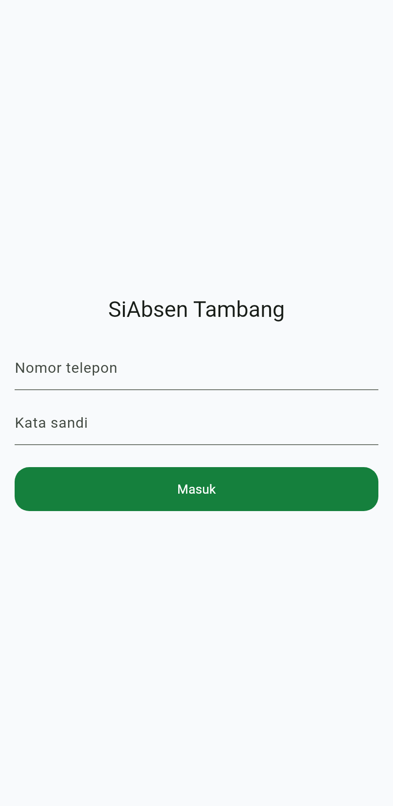
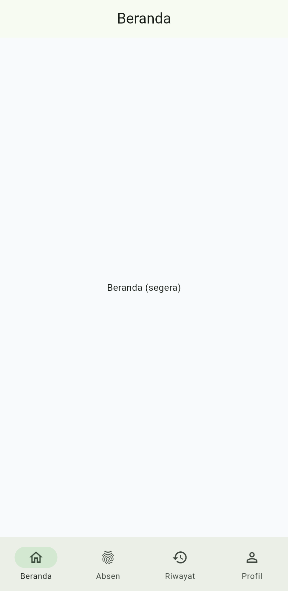
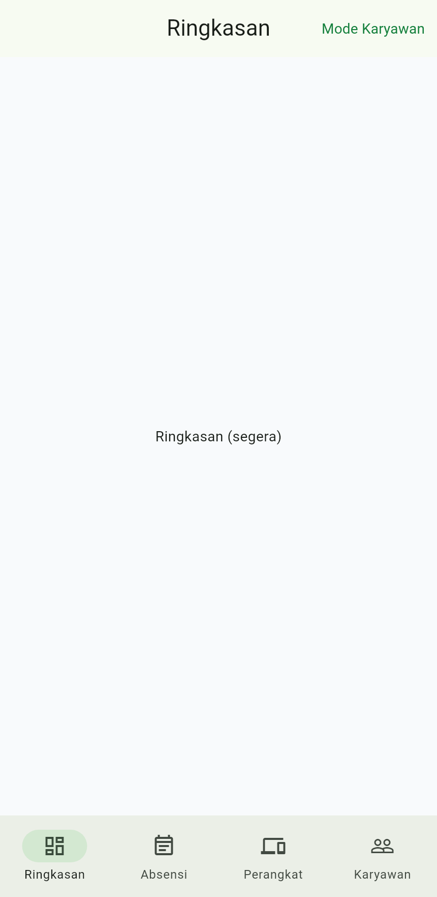

HRIS end-to-end untuk perusahaan tambang batu bara: karyawan absen dari HP, gaji dihitung otomatis dari data absensi yang otoritatif & teraudit. Dibangun untuk PT Kalimantan Tambang Mandiri.
Dibangun dengan Flutter (satu basis kode Android + iOS). Tema hijau/putih sesuai identitas perusahaan, alur absen singkat, dukungan mode gelap. Berikut tangkapan layar asli dari aplikasinya.



Routing peran otomatis: admin & karyawan mendapat antarmuka berbeda dari satu aplikasi. Sesi bertahan (tetap login saat app dibuka lagi).
Di tambang, masalah nyata: titip absen, manipulasi jam HP, dan data laporan yang buruk. Sistem ini dirancang menutupnya secara berlapis.
Keputusan absensi memakai waktu server, bukan jam HP. Payload absen tak punya field waktu yang mengikat — manipulasi jam HP tertutup total.
Satu perangkat disetujui per karyawan (persetujuan admin). Menutup praktik titip HP untuk absen menggantikan orang lain.
Setiap event absensi bersifat append-only (trigger DB menolak ubah/hapus). Pembatalan HR = baris baru yang tercatat — riwayat tak pernah dipalsukan.
Terima / tolak / tandai berdasarkan bukti, dengan prinsip gagal ke arah aman: bukti rusak → ditandai untuk ditinjau, bukan menuduh karyawan.
Verifikasi wajah dengan deteksi anti-spoofing (continuity + presentation-attack detection) — media direkam, keputusan ditinjau sampai layanan ML aktif.
Lokasi tersebar sesuai area kerja tambang → GPS jadi bukti audit, bukan gerbang. Deteksi lokasi palsu & atestasi perangkat direkam.
Data kehadiran yang otoritatif langsung menjadi dasar penggajian — lengkap dengan komponen & potongan sesuai aturan Indonesia, dan dapat diaudit.
Karyawan melihat slip di aplikasi & mengunduh PDF; HR menjalankan payroll, meninjau, memfinalisasi, dan mengekspor daftar transfer bank — semuanya dari data absensi yang sama.
Absensi (otoritatif, immutable) → Work Sessions → Shift/Roster → Engine Payroll → Slip Gaji
Laravel 12, model anti-curang, 207 tes lulus
Portal karyawan + area admin/HR
Flutter: login, routing peran, tema, 2 shell
Desain lengkap (BPJS, PPh21 TER, lembur, slip)
Pipeline absen, liveness, laporan